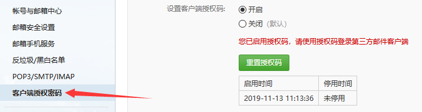

原文出处:本文由博客园博主秋風落葉提供。
原文连接:https://www.cnblogs.com/qiantao/p/11854769.html
原文连接:https://www.cnblogs.com/qiantao/p/11854769.html
在开发JavaWeb项目中，利用邮箱帮用户找回密码。
效果展示： 
需要一个发送邮件的jar包 ： javax.mail .jar
1.JSP页面（设置邮箱输入框）
HTML：
<p >请输入您账户关联的邮箱</p>
邮箱：<input type="email" name="email" id="email" placeholder="请您输入邮箱" required>
<button type="submit" id="retrievePassword">提交</button>JS：
$(document).ready(function () {
$("#retrievePassword").click(function(){
var email = $("#email").val();
if(email == null || email == ""){
alert("邮箱不能为空");
return;
}
//正则表达式判断邮箱地址是否正确
var emreg=/^\w{3,}(\.\w+)*@[A-z0-9]+(\.[A-z]{2,5}){1,2}$/;
if(emreg.test(email.value)== true){
alert("您输入的不是一个合法邮箱格式！");
return;
}
var postData = {
"email":email
}
// ajax后端数据请求
$.ajax({
type : "post",
url : "user/xxx",
data : postData,
success : function(data) {
//todo
},
error : function() {
//todo
}
});
});
});2.Controller(控制层)代码（根据用户输入的邮箱账号找到用户修改为新的密码，并生成发送邮件类的实例，再设置收件人和要发送的内容，最后发送邮件）
//找回密码控制器
@RequestMapping(value = "/xxx", method = RequestMethod.POST, produces = "text/html;charset=UTF-8;")
@ResponseBody // 此注解不能省略 否则ajax无法接受返回值
public String retrievePassword(HttpServletRequest request, HttpServletResponse response)
throws UnsupportedEncodingException {
request.setCharacterEncoding("UTF-8");
response.setCharacterEncoding("UTF-8");
HttpSession session = request.getSession();
Map<String, Object> map = new HashMap<String, Object>();
String email = request.getParameter("email");// email
//实例化一个发送邮件的对象
SendMail mySendMail = new SendMail();
//修改密码并返回
//产生随机的6位数密码
int Password = ((int)((Math.random()*9+1)*100000));
//根据邮箱寻找是否有该用户信息，找到就修改密码，否则就提示用户无效的用户Email，此步代码省略。。。。
//修改密码成功后进行发送邮件
//设置收件人和消息内容
mySendMail.sendMail(email, "xxx提醒，您的密码为："+ Password);
map.put("code", 200);
map.put("msg", "恭喜，找回密码成功，请前往邮箱查看密码！");
JSONObject jsonFail = new JSONObject(map);
return jsonFail.toString();
} 3.发送邮件类
package com.xxx.xxx.util;
import javax.mail.MessagingException;
import javax.mail.NoSuchProviderException;
import javax.mail.Session;
import javax.mail.Transport;
import javax.mail.internet.InternetAddress;
import javax.mail.internet.MimeMessage;
import java.util.Date;
import java.util.Properties;
public class SendMail {
// 发件人的邮箱账号如：xxx@163.com
public static String sendEmailAccount = "xxx@163.com";
// 发件人的邮箱的授权码(自己在邮箱服务器中开启并设置)
public static String sendEmailPassword = "xxx";
// 发件人邮箱的SMTP服务器地址，如：smtp.163.com
public static String sendEmailSMTPHost = "smtp.163.com";
// 收件人的邮箱账号
public static String receiveMailAccount = "";
// 把发送邮件封装为函数，参数为收件人的邮箱账号和要发送的内容
public void sendMail(String receiveMailAccount, String mailContent) {
// 创建用于连接邮件服务器的参数配置
Properties props = new Properties();
// 设置使用SMTP协议
props.setProperty("mail.transport.protocol", "smtp");
// 设置发件人的SMTP服务器地址
props.setProperty("mail.smtp.host", sendEmailSMTPHost);
// 设置需要验证
props.setProperty("mail.smtp.auth", "true");
//Linux端口25没有开放，放弃25端口，使用ssl加密并改用465端口--此举可以兼顾window和Linux
//使用ssl加密
props.setProperty("mail.smtp.ssl.enable", "true");
//设置端口
props.setProperty("mail.smtp.port", "465");
// 根据配置创建会话对象, 用于和邮件服务器交互
Session session = Session.getInstance(props);
// 设置debug模式，便于查看发送过程所产生的日志
session.setDebug(true);
try {
// 创建一封邮件
MimeMessage message = createMimeMessage(session, sendEmailAccount, receiveMailAccount, mailContent);
// 根据 Session 获取邮件传输对象
Transport transport = session.getTransport();
transport.connect(sendEmailAccount, sendEmailPassword);
// 发送邮件, 发到所有的收件地址, 通过message.getAllRecipients() 可以获取到在创建邮件对象时添加的所有收件人
transport.sendMessage(message, message.getAllRecipients());
// 关闭连接
transport.close();
} catch (NoSuchProviderException e) {
// TODO Auto-generated catch block
e.printStackTrace();
} catch (MessagingException e) {
// TODO Auto-generated catch block
e.printStackTrace();
} catch (Exception e) {
// TODO Auto-generated catch block
e.printStackTrace();
}
}
/**
*
* @param session
* 和服务器交互的会话
* @param sendMail
* 发件人邮箱
* @param receiveMail
* 收件人邮箱
* @return
* @throws Exception
*/
public static MimeMessage createMimeMessage(Session session, String sendMail, String receiveMail,
String mailContent) throws Exception {
// 创建一封邮件
MimeMessage message = new MimeMessage(session);
// 设置发件人姓名和编码格式
message.setFrom(new InternetAddress(sendMail, "xxx平台", "UTF-8"));
// 收件人
message.setRecipient(MimeMessage.RecipientType.TO, new InternetAddress(receiveMail, "尊敬的用户", "UTF-8"));
// 设置邮件主题
message.setSubject("找回密码提醒", "UTF-8");
// 设置邮件正文
message.setContent(mailContent, "text/html;charset=UTF-8");
// 设置发件时间
message.setSentDate(new Date());
// 保存设置
message.saveChanges();
return message;
}
}注意此处用的授权码，需要自己登录邮箱去设置，如163邮箱设置如下：

参考：https://blog.csdn.net/qq_40348465/article/details/83629000